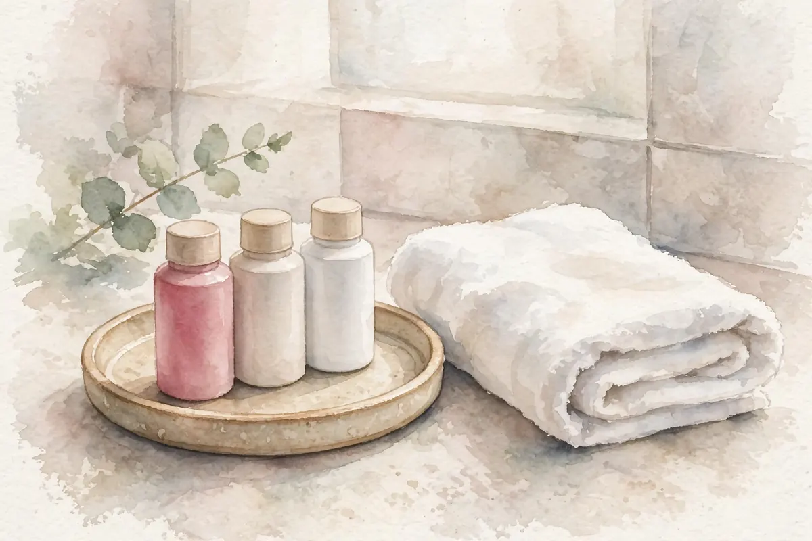

トップ ＞ ヘアケア ＞ 宿泊先のアメニティシャンプーの確認点
宿泊先のアメニティシャンプーの確認点

旅行や出張で宿に泊まるとき、シャンプーは備え付けのアメニティを使うか、自分のものを持っていくか。施術の現場でも、旅先の洗髪についての話題はよく出ます。この記事では、アメニティを使う場合の確認点を整理します。
まず「種類」と「表示」を見る
アメニティのシャンプーは、詰め替え式のボトル、個包装、備え付けのディスペンサーなど、形がさまざまです。まず確認したいのは、それがシャンプーなのか、リンスインシャンプーなのか、ボディソープと兼用なのか、という種類です。ボトルの表示を見れば、用途が書かれています。
成分表示まで載っているものは少ないですが、用途と使い方が分かれば、量の決め方の見当はつきます。香りの強さも、キャップを開けて確かめてから使うと、想定と違う香りで困ることが減ります。取り違えを防ぐためにも、表示の確認は最初の一手です。
量は「少なめから」が旅先の基本
アメニティは、自分の髪との相性が未知数です。泡立ちや洗い上がりの感じ方が、自宅のものと違うことがあります。最初は少なめの量から始めて、泡の行き渡りを見ながら継ぎ足すのが無難です。すすぎも自宅以上に丁寧に。旅先では水の感じも違うため、残り感の確認を場所ごとにしておくと安心です。
連泊の場合は、初日の感触を覚えておくと、2日目以降の量の調整がしやすくなります。合わないと感じたら無理に使い続けず、持参したものや、現地で小さいサイズを買う選択肢もあります。
持参するかは「髪の事情」で決める
カラーやパーマの直後など、髪の扱いに注意が要る時期は、使い慣れたものを持参するのが安心です。逆に、短い滞在で荷物を減らしたい場合は、アメニティで済ませる割り切りも現実的です。判断の材料は、滞在日数、髪の状態、荷物の余裕の3つです。
小分け容器に詰めて持っていく方法は、別記事「旅行先でのシャンプーの量と小分けの工夫」で詳しく紹介しています。旅の洗髪は、完璧を目指すより、確認の順番を持っておくことが大切です。
最近は、環境への配慮から、フロントで必要な分だけアメニティを受け取る形式の宿も増えています。その場合は、自分の髪の長さに必要な量を見積もって受け取ることになります。個包装の量は製品によって違うため、足りなそうな場合は初日に確認しておくと、2日目以降の計画が立てやすくなります。
出張の多い方は、宿のアメニティの感触をメモしておくと、次回の荷造りの判断材料になります。「この宿のものは合った」「次回は持参する」といった一言の記録です。記録は大げさなものでなくて構いません。旅の回数が多い方ほど、こうした小さな記録が荷物の最適化につながります。
アメニティのボトルの置き方にも、宿ごとの工夫が見られます。最近は大きなボトルを据え置く形式が増えていますが、その場合は中身の管理方法が宿によって異なります。気になる場合はフロントに確認することもできますし、個包装の用意がある宿もあります。確認を遠慮する必要はありません。また、宿のシャンプーが合った場合は、商品名をメモしておくと、自宅の買い物の参考になります。宿で販売していることもあります。旅の出会いが、自宅のケアの選択肢を広げることもあるのです。
アメニティの確認は、到着直後の身支度の時間に済ませておくと、夜の入浴がスムーズです。部屋に着いたら、まず浴室の棚を見る。そんな小さな習慣が、旅の夜の段取りを助けてくれます。
確認点が多いように見えますが、慣れれば数分で済む作業です。種類を見る、香りを確かめる、少なめから始める。この3つの順番だけ覚えておけば、どの宿でも応用が利きます。
セラフィナ「旅先では、種類の確認と少なめスタート。この2つで失敗が減るね」